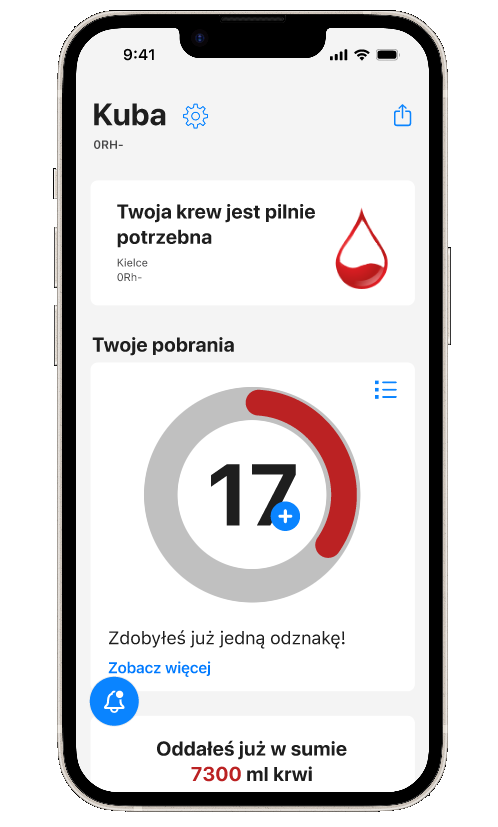
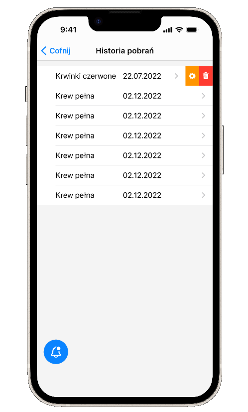
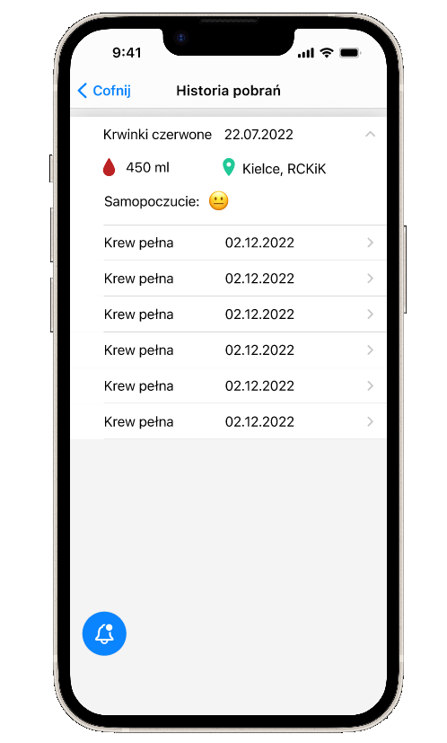
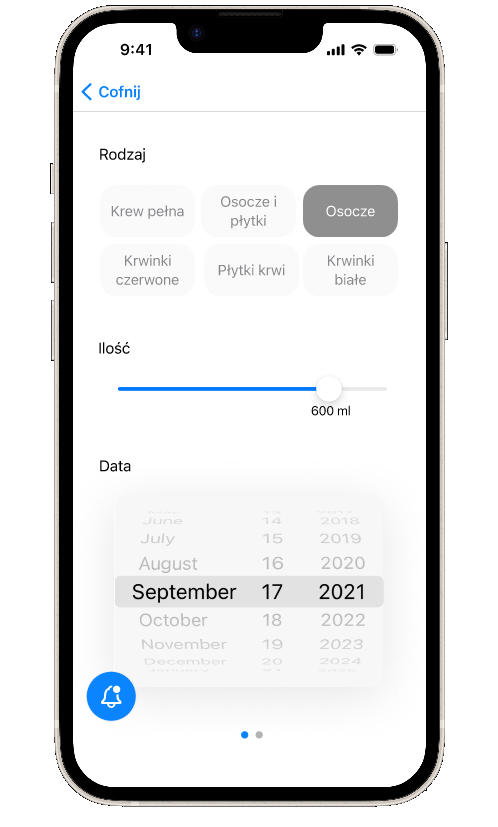
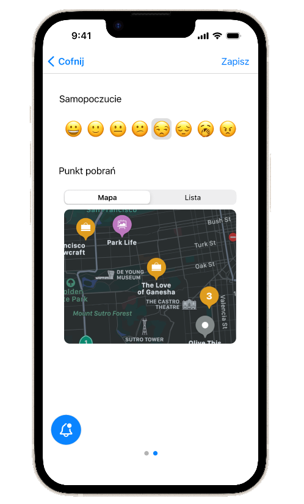
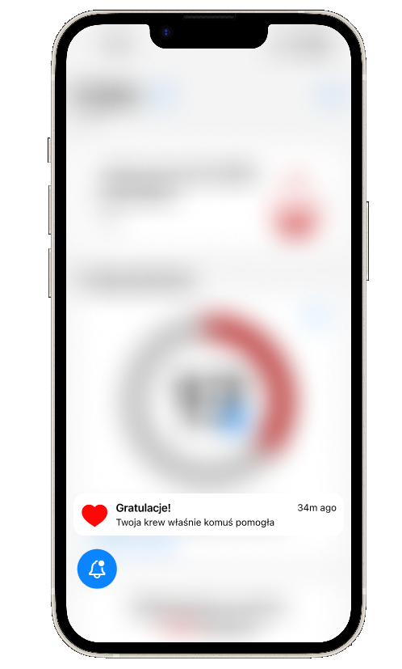

Cel projektu
Celem projektu było zaprojektowanie intuicyjnej aplikacji mobilnej, która wspiera użytkowników w zarządzaniu procesem oddawania krwi oraz zapewnia szybki dostęp do najważniejszych informacji.
Aplikacja ma ułatwiać sprawdzanie historii donacji, informować o możliwości ponownego oddania krwi oraz prezentować najważniejsze dane w czytelnej i uporządkowanej formie.
Kluczowym założeniem było stworzenie interfejsu, który jest prosty, czytelny i zgodny z dobrymi praktykami projektowania dla systemu iOS. Dzięki temu użytkownik może szybko odnaleźć potrzebne informacje bez konieczności przechodzenia przez skomplikowane procesy.
Projekt miał także budować pozytywne doświadczenie użytkownika poprzez spokojną estetykę interfejsu oraz wyraźne wizualne wyróżnienie najważniejszych elementów.
Łatwy dostęp do informacji
Historia donacjii i statystyki
Motywacja i zaangażowanie
Wyzwania projektowe
Jednym z głównych wyzwań było zaprojektowanie aplikacji medycznej, która jednocześnie pozostaje czytelna i nie przytłacza użytkownika nadmiarem informacji. Dane związane ze zdrowiem wymagają wysokiej przejrzystości, dlatego kluczowe było odpowiednie zaprojektowanie hierarchii wizualnej.
Kolejnym wyzwaniem było znalezienie równowagi pomiędzy estetyką a funkcjonalnością. Interfejs musiał być nowoczesny i atrakcyjny wizualnie, a jednocześnie maksymalnie prosty w obsłudze.
Problem
Oddawanie krwi jest niezwykle ważnym elementem systemu opieki zdrowotnej, jednak wiele osób nie ma łatwego dostępu do informacji związanych z krwiodawstwem. Wiele istniejących narzędzi jest nieintuicyjnych, przeładowanych informacjami lub nie oferuje funkcji, które faktycznie wspierałyby użytkownika w zarządzaniu donacjami.
Potencjalni dawcy często nie wiedzą kiedy mogą ponownie oddać krew, gdzie znajduje się najbliższy punkt poboru lub jakie są aktualne potrzeby w bankach krwi. Brakuje także prostych narzędzi pozwalających śledzić historię donacji i najważniejsze informacje zdrowotne.
Rozwiązanie
Zaprojektowana aplikacja oferuje przejrzysty interfejs oparty na modularnym układzie kart, który pozwala użytkownikowi szybko odnaleźć najważniejsze informacje.
Centralnym elementem interfejsu jest dashboard prezentujący kluczowe dane związane z krwiodawstwem, takie jak historia donacji, informacje o kolejnych możliwych terminach oddania krwi oraz aktualne dane dla użytkownika.
Jasna kolorystyka interfejsu została uzupełniona czerwonym kolorem akcentowym, który podkreśla najważniejsze elementy oraz nawiązuje do tematyki krwiodawstwa.
Dzięki zastosowaniu minimalistycznego stylu oraz czytelnej typografii aplikacja jest intuicyjna w obsłudze i pozwala użytkownikowi szybko odnaleźć potrzebne informacje.
Moja rola w projekcie
W projekcie byłam odpowiedzialna za cały proces projektowy – od analizy problemu, przez research i koncepcję produktu, aż po projekt finalnego interfejsu aplikacji.
Do moich zadań należało przeprowadzenie analizy rynku, identyfikacja potrzeb użytkowników oraz opracowanie struktury informacji w aplikacji. Następnie przygotowałam papierowy prototyp oraz projekt Hi-Fi przedstawiający finalny wygląd aplikacji.
Projekt obejmował również opracowanie stylu wizualnego, dobór kolorystyki oraz zaprojektowanie komponentów interfejsu zgodnych z wytycznymi iOS
Road Map
Desk Resarch
Pierwszym etapem projektu był desk research, którego celem było zrozumienie kontekstu projektowanego rozwiązania oraz poznanie istniejących produktów dostępnych na rynku.
Analiza obejmowała aplikacje związane z krwiodawstwem, aplikacje medyczne oraz systemowe wzorce projektowe iOS. Szczególną uwagę zwróciłam na sposób prezentowania informacji zdrowotnych, czytelność interfejsów oraz sposób prowadzenia użytkownika przez procesy wymagające precyzyjnych danych.
Na podstawie przeprowadzonych analiz wyodrębniłam kilka kluczowych założeń projektowych: maksymalną czytelność informacji, ograniczenie liczby kroków potrzebnych do wykonania najważniejszych działań oraz wykorzystanie wizualnych elementów podkreślających znaczenie funkcji związanych z oddawaniem krwi.
Analiza konkurencji
Sekcja
Persona
User Flow
Główny scenariusz użytkownika w aplikacji koncentruje się na szybkim dostępie do informacji związanych z oddawaniem krwi.
Użytkownik otwiera aplikację → przechodzi do ekranu głównego → sprawdza informacje o ostatniej donacji → widzi kiedy może ponownie oddać krew → sprawdza historię donacji lub dodatkowe informacje dotyczące krwiodawstwa.
Celem zaprojektowanego user flow było ograniczenie liczby kroków potrzebnych do wykonania najważniejszych działań oraz zapewnienie użytkownikowi szybkiego dostępu do kluczowych informacji już z poziomu ekranu głównego.
Paper Prototyping
Na etapie projektowania koncepcji interfejsu rozpoczęłam pracę od szkiców papierowych. Pozwoliło to szybko przetestować różne układy ekranów oraz sposoby organizacji treści bez konieczności budowania od razu szczegółowych makiet cyfrowych.
Szkice pozwoliły skupić się przede wszystkim na funkcjonalności aplikacji oraz na tym, w jaki sposób użytkownik będzie poruszał się pomiędzy poszczególnymi ekranami. Na tym etapie powstały pierwsze koncepcje układu głównego dashboardu, ekranów informacyjnych oraz systemu nawigacji.
Paper prototyping umożliwił szybkie wprowadzanie zmian oraz iterowanie nad rozwiązaniami jeszcze przed rozpoczęciem pracy nad finalnym interfejsem wizualnym
Guerrilla Testing
Po przygotowaniu pierwszych koncepcji interfejsu przeprowadziłam szybkie testy użyteczności w formie guerrilla testing. Testy zostały wykonane z udziałem kilku osób, które miały za zadanie wykonać podstawowe działania w aplikacji, takie jak odnalezienie informacji o oddawaniu krwi czy sprawdzenie historii donacji.
Celem testów było sprawdzenie czy zaprojektowana struktura informacji jest intuicyjna oraz czy użytkownicy bez problemu rozumieją działanie poszczególnych elementów interfejsu.
Testy pozwoliły zweryfikować sposób rozmieszczenia kluczowych funkcji oraz potwierdziły, że zastosowany układ kart i prostych sekcji ułatwia szybkie odnalezienie najważniejszych informacji.
Wnioski z testów zostały wykorzystane do wprowadzenia drobnych poprawek w strukturze interfejsu oraz w hierarchii wizualnej elementów.
Hi-Fidelity UI Design
Podczas projektowania aplikacji kluczowe było stworzenie interfejsu, który będzie czytelny, intuicyjny i spójny z tematyką medyczną. Każda decyzja projektowa została podjęta z myślą o uproszczeniu dostępu do informacji oraz zapewnieniu użytkownikowi komfortowego doświadczenia.
Jasny i przejrzysty interfejs
Aplikacja została zaprojektowana w jasnej kolorystyce, która kojarzy się z aplikacjami medycznymi oraz buduje poczucie przejrzystości i bezpieczeństwa. Jasne tło pozwala użytkownikowi łatwo skanować treści oraz zwiększa czytelność elementów interfejsu.
Minimalistyczny styl pomaga ograniczyć wizualny chaos i sprawia, że najważniejsze informacje są od razu widoczne.






Dashboard jako centralny punkt aplikacji
Główny ekran aplikacji pełni funkcję dashboardu, który prezentuje najważniejsze informacje dla użytkownika. Dzięki temu użytkownik po uruchomieniu aplikacji od razu widzi kluczowe dane, takie jak historia donacji czy najważniejsze informacje dotyczące oddawania krwi.
Takie rozwiązanie pozwala ograniczyć liczbę kroków potrzebnych do znalezienia najważniejszych informacji.
Kolor czerwony jako element akcentowy
Kolor czerwony został użyty jako główny kolor akcentowy w interfejsie. Jest on bezpośrednio związany z tematyką krwiodawstwa i pozwala wizualnie wyróżnić najważniejsze elementy aplikacji.
Zastosowanie jednego dominującego koloru akcentowego pomaga także utrzymać spójność wizualną projektu.
Funkcje aplikacji
Kluczowe funkcje aplikacji obejmują:
• dostęp do historii oddawania krwi• informację o możliwości ponownej donacji
• prezentację najważniejszych danych dla użytkownika
• czytelny dashboard z kluczowymi informacjami
• intuicyjną nawigację pomiędzy sekcjami aplikacji
Projekt skupia się na ograniczeniu liczby funkcji do tych najbardziej potrzebnych, dzięki czemu aplikacja pozostaje prosta i intuicyjna w użyciu.
Interaktywny prototyp
Aby lepiej zaprezentować sposób działania aplikacji, przygotowałam interaktywny prototyp w Figma. Pozwala on przejść przez główne ekrany aplikacji oraz zobaczyć sposób nawigacji pomiędzy poszczególnymi sekcjami.
Zobacz interaktywny prototyp